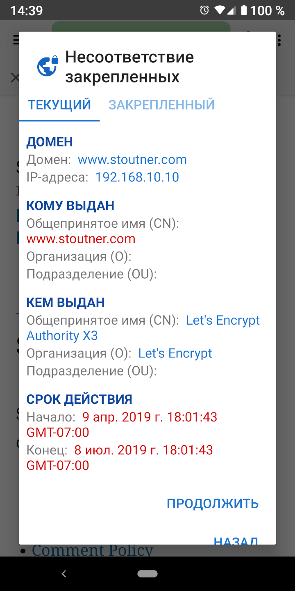

Подключение с уверенностью Подключение с уверенностью
Подключение с уверенностью Подключение с уверенностьюПри посещении зашифрованного URL (тот, который начинается с HTTPS) веб-сервер использует сертификат SSL для шифрования информации, отправленной в браузер, и для идентификации сервера. Цель идентификации сервера состоит в том, чтобы запретить машине, расположенной между браузером и веб-сервером, притворяться сервером и дешифровать информацию во время ее транзита. Этот тип атаки известен как атака "Человек посередине" (MITM). Сертификаты SSL генерируются органами сертификации: компаниями, которые проверяют идентификационные данные сервера и выдают сертификат за определенную плату. В Android есть список доверенных центров сертификации и будет принимать любые их сертификаты для любого веб-сайта. Организации не должны получать сертификат SSL для доменов, которые они не контролируют, но на практике многие правительства и крупные корпорации смогли это сделать.
Закрепление сертификата SSL указывает браузеру, что для определенного домена должен быть доверен только один определенный сертификат SSL. Любой другой сертификат, даже если он действителен, будет отклонен.

Срок действия сертификатов SSL истекает в указанную дату, поэтому даже закрепленные сертификаты SSL будут периодически обновляться. Как правило, закрепление сертификатов SSL в большинстве случаев не требуется. Но для того, кто подозревает, что за ним ведется наблюдение, закрепление сертификата SSL поможет обнаружить и помешать атаке MITM. Privacy Browser также имеет возможность закрепления IP-адресов.

Сертификаты SSL могут быть закреплены в настройках домена. Помимо защиты от атак MITM, закрепление самоподписанного сертификата для устройства, такого как беспроводной маршрутизатор или точка доступа, удалит сообщение об ошибке, которое обычно отображается каждый раз, когда загружается его сайт. При нажатии на активную вкладку отображается текущий сертификат SSL веб-сайта.